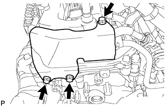

ТОПЛИВНАЯ ФОРСУНКА > СНЯТИЕ |
| 1. СНИМИТЕ РАСШИРИТЕЛЬНЫЙ БАЧОК НА ВПУСКЕ ВОЗДУХА |
Снимите расширительный бачок на впуске воздуха (Нажмите здесь).
| 2. СНИМИТЕ ЗАДНЮЮ КРЫШКУ ГОЛОВКИ БЛОКА ЦИЛИНДРОВ |
|  |
Выверните 3 болта и снимите крышку.
| 3. ОТСОЕДИНИТЕ ТОПЛИВОПРОВОД № 1 |
Отсоедините топливопровод № 1 (Нажмите здесь).
| 4. ОТСОЕДИНИТЕ ТОПЛИВОПРОВОД № 2 |
 |
Отсоедините топливопровод № 2 (Нажмите здесь).
| 5. СНИМИТЕ ТОПЛИВНУЮ РАМПУ В СБОРЕ |
 |
Отсоедините 6 разъемов топливных форсунок.
Выверните 4 болта и снимите топливную рампу вместе с 6 топливными форсунками.
| 6. СНИМИТЕ ТОПЛИВНУЮ ФОРСУНКУ В СБОРЕ |
 |
Снимите 6 топливных форсунок с топливной рампы.
| *1 | Топливная рампа |
| *2 | Топливная форсунка |
Снимите кольцевое уплотнение и виброизолятор форсунки с каждой топливной форсунки.